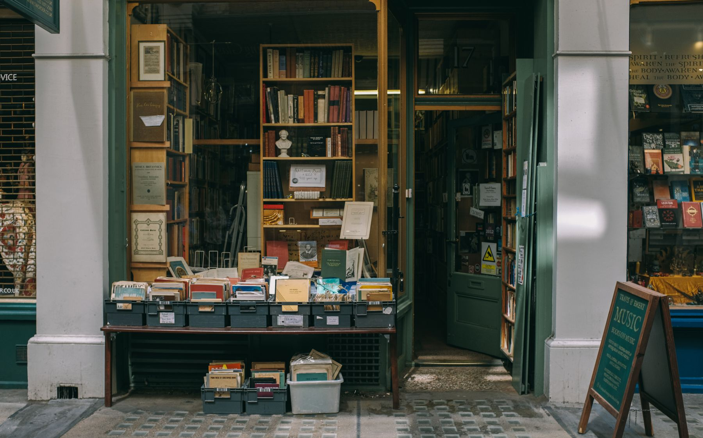

Still to discover
Still to discover01 / A little comfort
A warm little pause.
Choose a treat at the coffee shop to collect this memory.
Visit the coffee shop ↗Back where the day began
The afternoon is still unfolding. Your discoveries will find a home here.
Still to discover01 / A little comfort
Choose a treat at the coffee shop to collect this memory.
Visit the coffee shop ↗02 / A closer look
Photograph three different things in the park to collect this memory.
Return to the park ↗
Still to discover03 / A new chapter
Browse the bookshop and pick a book to collect this memory.
Visit the bookshop ↗One more thing to discover
Collect a café memory, three park photos, and a book to uncover the last little piece of your afternoon.
 Wish you
Wish youThe final discovery
The little things were the story all along.
You only had to notice.
Until the next little adventure.
Your photos, brought home